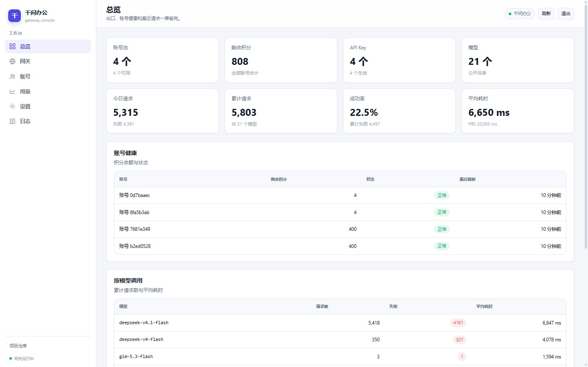

qwenwork2api 是一个自托管的千问办公反代：把千问办公客户端的协议转换成标准的
/v1/chat/completions，任何支持自定义 base_url 的客户端、插件、脚本都能直接用。
# 换成你自己的网关地址和 Key curl https://your-host/v1/chat/completions \ -H "Authorization: Bearer sk-qw-..." \ -H "Content-Type: application/json" \ -d '{ "model": "qwen3.8max", "messages": [{"role":"user","content":"你好"}], "stream": true }' # 返回标准的 OpenAI 结构 { "object": "chat.completion.chunk", "choices": [{ "delta": { "content": "你好！" } }] }
协议转换只是起点，真正麻烦的是登录态、设备指纹、限流和账号轮换——这些都在网关里处理好了。
支持 /v1/chat/completions 与 /v1/models，非流式和 SSE 流式都能跑，无需改客户端代码。
多个账号自动做优先级排序，额度用尽、鉴权失败自动切下一个，并对失败账号做冷却。
每个账号绑定一台固定设备（平台、架构、客户端版本、machineId），支持一键换指纹重新签发。
access token 过期用 refresh token 静默续期，续期也失效才标记账号异常，不影响其他账号。
账号、余额、API Key、模型目录、用量、日志一个面板全看完，还有逐模型自检。
单个 Node 进程 + 一个 data 目录，systemd / pm2 / docker 都能跑，不用数据库。
以下 21 个模型已在线上实测可用，客户端里直接写这里的名字即可。
qwen3.6-plus、qwenwork-enterprise 这类高档次需要对应套餐的账号，网关本身不做限制。三步：起服务 → 加账号 → 客户端接入，全程不需要装千问办公客户端。
需要 Node 18 以上，只需要一个目录和一份状态文件。
# 拉代码 git clone https://github.com/jianhx189/qwenwork2api.git cd qwenwork2api npm install # 直接跑（默认 4021 端口） PORT=4021 HOST=127.0.0.1 node server.mjs
打开 /admin 面板，用「授权登录」扫码，或把客户端里的 access token 粘进「粘贴 Token 导入」。
新建自定义 OpenAI 服务：Base URL 填 https://你的域名/v1，Key 用面板里生成的 sk-qw-...，模型名照抄上面的列表。
server {
listen 443 ssl http2;
server_name qwen.example.com;
# 流式必须关掉缓冲
proxy_buffering off;
proxy_read_timeout 3600s;
location / {
proxy_pass http://127.0.0.1:4021;
proxy_http_version 1.1;
proxy_set_header Host $host;
proxy_set_header Connection "";
chunked_transfer_encoding on;
}
}
账号、余额、Key、模型、用量、日志——都在一个页面里，数据来自网关自身，不需要另外的数据库。

单个刷新余额、领取积分、换指纹、删除；也能一键批量处理整池。
按日、按模型、按 Key 的调用分布，附平均耗时与失败率。
一键逐模型打真实请求，哪些能用、哪些是套餐限制一目了然。
把边界写清楚，比堆功能更有用。